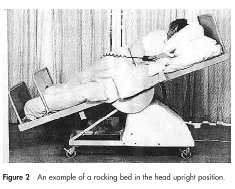
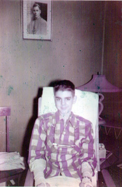
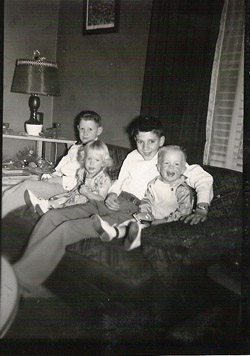
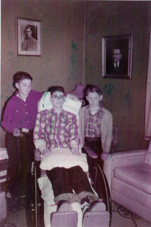

Actually I was not so much "born again" as put back "in the womb" again. The iron lung was basically my source of life, or breathing at least. The model I was placed in was not the type illustrated on the previous page. Mine, the Collins-Drinker model, had a bellows section below the tank that provided the positive pressure inside the cylinder that pushed the air out of my lungs, and the negative pressure which caused the lungs to expand, breathing air inward. One has to be inside this wonderful device in order to truly appreciate it.
Talking was a real experience. You quickly learn one of the principal rules of physiology of the human voice box: you only talk when the air is going out of your chest. Once I was settled in and everything was explained to me, the doctor and my father left. A nurse was assigned to sit beside me throughout the night. She was a Catholic nun, because this was a Catholic hospital. (In fact, I had 24-hour-a-day care for several days.) For some reason, I felt the desire to talk to her in a continuous stream of conversation. Uh, let me rephrase that in an intermittent-yet-continuous stream. Of course, as I've just said, you can only speak when air is going out of, not in, your body. So due to the generally weak state of my chest's breathing muscles, many, many times I would be in the middle of a sentence when the machine reversed its pressure cycle from positive to negative. Result? My mouth just kept moving for a few more syllables with no sound coming out. It took me quite a while to learn how to speak in rhythm with the machine. This might be compared to learning ballroom dancing, the kind where two people hold each other close, cheek-to-cheek. Having been too shy with girls all my life, I had never even tried to learn that style of dance, hence I had no previous experience to refer back to.
This nun was very kind and patient to listen to my endless chatter. I talked about everything - my parents, my brothers, my school, my summer vacation, etc. By the time the sun came up, there was little that this lady didn't know about me. Trying to sound brave and religious, I commented that if this disease had to strike our family, and in particular one of us boys, I'm glad it hit me and not one of my little brothers. I was the big one and I could "take it for them". I would be less than honest if I did not say now that knowing what I've been through since, I have on occasion let the thought of "how could I say that?" creep into my brain. Gradually as dawn approached, I became accustomed to the rhythm of the machine. Only then did I probably get some sleep.
Around mid-day my father arrived to see how I was doing. Understand now, this meant that he had to leave his school early on the first day of a new academic year and drive about 70 miles in a hot summer sun to be with me. While he was with me, an incident occurred that in retrospect is comical, but at the moment seemed critical. My room was on the south side of the building, hence facing the sun. This made the room temperature a bit higher than normal. There was an air-conditioner in the window, so my dad decided to turn it on to make us both more comfortable. Apparently that caused an overload to the electrical system, because a few moments later everything shut down - lights, air-conditioner, and the iron lung! By this time, I had come to equate the iron lung with mere survival. No iron lung meant no breathing; no breathing meant no life for Terry. So like any person would do, I panicked. Not only that, I began screaming, "Get me outa here, get me outa here!" My father knew that the bellows part of the machine could be operated manually, if one could just get the lever disengaged from its storage position and put into operation. But he was a bit confused as well, not having done such a thing before. He finally succeeded, but also caused a bleeding injury to his hand as it got caught in the mechanism. As he pumped the bellows by hand, someone else managed to restore the flow of electricity. All became normal once again.
Shortly, the scene repeated itself. The electricity went off once more. Once more, I panicked, begging to be removed. But my father had learned the technique well how to pump the bellows by hand. He did it much quicker this time and with no personal injury to himself. This time either the electrical system was adapted to handle the greater need for power or we just didn't use the air-conditioner. Either way, we no longer had this trouble. However my father did point out two things about my behavior in this incident. One was that if I were shouting so forcefully, then I was obviously breathing very well. And two, if they had taken me out of the iron lung, how would that help my breathing situation? I had to admit that his logic was impeccable.
The above incident is ample evidence of just how lucky I was regarding the matter of breathing. While I was definitely seriously affected, I was not 100% dependent on mechanical assistance. Rather it was more like 75% to 80%. The machine could be turned off for short moments while the doctors or nurses could insert their hands inside the "port holes" along the sides in order to attend to my care.  (Click HERE to see a picture of this sort of thing.) This was indeed fortunate for me because it allowed me to be placed on a rocking bed sooner than would be normal. (For a sample of this appliance, see illustration at left. Mine was larger than it, but the idea is the same.) A rocking bed can be best described as a bed supported only at the middle, moving up and down in much the same manner as a child's teeter-totter. In the position shown, the stomach and other internal organs tend to pull the diaphragm downward, thus aiding the entry of air into the lungs. When the head goes down and feet rise, the reverse is true; the same organs give a gentle push on the diaphragm which aids the expulsion of air out of the lungs.. While breathing is not forced on the patient as it is in the case of the iron lung, it certainly is an improvement in patient comfort.
I was the first person to use a rocking bed in this hospital. My bed had just recently been obtained. The doctors and nursing staff had never taken care of a polio patient before, using this great device. They didn't really know what the proper rocking speed should be for me, nor the proper angle. Therefore, we had to proceed by trial and error, experimenting as we went.Therefore, we had to proceed by trial and error, experimenting as we went. Eventually these details were resolved. (Click HERE to see the article about me and the bed that shortly appeared in the citys major newspaper.)
One other critical matter arose regarding my bedsores. While lying flat on my back in the iron lung, a couple of wrinkles in my sheet had begun to irritate two spots on my back one behind my shoulders and the other on my tailbone. They escaped detection until I was transferred to the bed. The active rocking motion of the bed caused my body to slide up and down inside my skin, gradually aggravating the seriousness of each sore.My dad often described their size by comparing the one on my tailbone as a circle equal to an orange cut in half. The other sore was only slightly smaller. Once the problem was duly recognized and treated, it went away.
As soon as some of my breathing strength returned, the doctor began granting me stop time on my bed. That is, short periods of time in which the bed could be turned off, allowing me to breathe on my own. We began with rather modest quantities of time like 15 minutes, 30 minutes, and so on. Later on that was moved up to 1 hour and 2 hours. I certainly liked this as it showed measurable progress in a very obvious way. It also gave me the time necessary to leave my room and go to the TV room just down the hall from my room to watch the world series! Yes, that year the Yankees played the Dodgers in the fall classic. While I didn't really know much about major league baseball in those days, anything was better than lying in my room, staring at the walls.
My stop time got me in trouble with my doctor on one occasion. I was up to 2 or more hours and feeling rather strong in general. So as a nurse would enter my room to inquire if it was time to turn the bed on, I would say, No, not yet. Or, I still have some more time left. Come back later. I played this little game for about 6 hours. Finally, I gave in and said that it was time to turn it on. I'll bet the nurses were relieved. That evening when the doctor did his rounds, he found out about my little escapade. His visit to me was a little on the sour side of things. He wasn't too happy. I told him that I felt good during this time. I was just testing out my overall breathing strength. In retrospect, I hope none of the nurses were ever reprimanded for not following orders.
Lying in bed for hours on end with nothing to do does nothing to help the body improve, nor the mind. Television sets were as rare as hen's teeth in those days in that part of Kansas , so that was out of the question. Somebody did obtain a simple radio for me to provide some musical entertainment. But the nicest thing happened when the kids at school heard of my situation. They took up a collection to buy me my own radio. There was a slight hitch however the exact model they were ordering for me wasn't available. When the company was informed about the recipient (me), it decided to contribute to the project by sending a more elegant and expensive model for the same price. And that's how I got my nice clock-radio that was a constant companion for 24 years until it died in an apartment fire in Illinois .
There was another interesting item that crossed my path about this time called Project-a-book. Some company had cleverly arranged to have the pages of a regular book of literature to be photographed on a continuous strip of film very much in the way of typical film strips that are often used in classrooms. When placed in the projector and turned on, each page could then be viewed on the ceiling. By pressing a button, the film could be advanced page by page. Since I could not press a button in the normal way, they fastened the button device to a brick, then positioned a tongue depressor against it. By moving my head, I could activate the motor to advance the film, hence turn the page. In this manner I read at least two books: Tom Sawyer and The Wizard of Oz.
My body, however, needed much more attention than my mind. So enters the physical therapist into my life. Her name was Mrs. Gerstner. After some initial evaluation of my muscular condition, she caught my complete attention when she suggested the idea of putting me in a mini-swimming pool, called a Hubbard tank, that they just happened to have down at the other end of the hall. Boy, was I all ears to that. What she neglected to warn me about was that it was work, not play. Stretching weak muscles that haven't been moved recently is a feeling that one does not look forward to. Kind though Mrs. G tried to be with me, I fear that I was a bit of a fraidy cat. As she moved my arms and legs in the tank, I screamed a bit more than the pain merited. Fortunately, my condition improved little by little.
The next thing Mrs. Gerstner brought to me was the standing bed. This apparatus allows a patient to be raised to a nearly vertical position in order to put one's full body weight on the feet and legs. Like the therapy sessions in the Hubbard tank, it too had its very painful moments. Of course, one isn't put in a vertical from the beginning, rather you start out at small angles and work your way up. When I reached 45º - 50º, I was sure I was going to fall forward on my nose. That shows the net effect of lying flat for extended periods of time. (Click here to see me using the standing bed. Here my angle is about 80 º - 85º)
There were two members of the staff that became extra special to me. Cecilia was a nurse that worked the night shift (11 p.m. to 7 a.m.). Since I needed to change my body position frequently throughout the day anyway, it was only natural that I would meet Cil and interact with her. In the middle of the night, I would get her attention at the nurse's station by merely calling out Cil! as loud as necessary. If she were available, she came to my room to see what I wanted. And what I usually wanted was a position change and a little conversation. The latter was just as important to me as the former, as far as things went with Cil. She often treated me with little items of non-hospital food that she brought to me from the cafeteria when she took her lunch break. Boy, was I sad when Cil didn't work her shift. Nights just weren't the same.
The other individual was Gustavo, also known as Gus. He was a young fellow working as an orderly in the hospital while he attended the local college in town, Fort Hays State College. He was big and strong and I liked the way he handled me. He often pushed my bed to the TV-room and back so that I could enjoy some change of scenery. By now I had changed rooms to one that was in the middle of the corridor and closer to the nurse's station, hence farther away from my old room next to the TV-room. One afternoon I had to get back to my room in a hurry in order to urinate. So Gus began pushing me as fast as safety would allow. Once in my room, he turned me to my left side which, strange to recall now, was my preferred manner in those days for positioning my body prior to insert the urinal. Gus then had to hurry around to the right side to get the urinal from the little bed-table. And in that moment, the unthinkable occurred I rolled off the bed, landing flat on my back on the floor! During the fall, my head struck a slight blow on a chair, which undoubtedly helped things. Other than that, it was pretty much a simple thing, with no pain or discomfort. On the other hand, it's hard to imagine what was going through Gus' mind as he immediately dashed to my side. He must have feared the worst, or that I was gravely injured. I assured him not to worry, I felt okay. As he started to pick me up, I said no, go get some help. My biggest fear at this time was bending certain joints in my knees, hips, and back. With another person aiding him, they could maintain my body in a straighter position, thus minimizing the pain. A nurse's aide was summoned and I was back in bed rather rapidly. No real harm done from my point of view. I don't recall if Gus was adversely affected by this incident. It certainly wasn't all his fault.
I never seemed to lack for visitors during my five-month stay in St. Anthony's hospital. First, my father and Donna came as often as possible from the considerable distance that they had to travel. I'll never forget the click-clack of Donna's high heeled shoes as she approached my room, walking down the hallway. That always meant good times were ahead for me. Sadly however, I never got to see my two brothers until Christmas time. (See photos below.) I assume that was to protect them from the polio virus. Here is the first picture I have showing that meeting at the hospital's first floor entryway. Other visitors included some classmates and teachers from my school. But the city of Hays provided me with some unique visitors from time to time, especially in the months of October and November, when football season was in high gear. There were two high schools in town, one operated by the Catholic church, the other was the normal public high school. There was a great athletic rivalry between these two schools. During one of their Friday games, some players were injured severely enough to require hospitalization. The boys from the Catholic school were brought to my hospital for treatment. When their friends came to visit them, there were too many to fit into the boys' room. I gained from this dilemma in that the overflow mostly girls came into my room to meet me. So thanks to the injuries on the gridiron on Friday, I had some pleasant entertainment on Saturday.
   Terry, in waiting room downstairs Gary, Cory, & the twins we 3 brothers
This hospital had its own professional nurse training program. Young ladies from all around the area came to study the Nightingale arts. That was good for me, too. Not only did their presence brighten up my day, during the initial two or three weeks when I was given round-the-clock observation, they made my nights more pleasant as well. Each night some one was asked to spend the night shift sitting beside my bed to attend to any need I might have, or to call a registered nurse. They also were responsible for dispensing daily medications and shots. Pills and shots are two quite different matters. The former is straight forward; the latter requires skill and practice. Some of these students were not my preferred shot-givers, so I didn't look forward to seeing them enter my room with their little tray of goodies.
Before I close out the Hays portion of my hospitalization, I must not let one other thing go unmentioned: Donna's letters. Remember we had only just been a mother-son combination for about two weeks when the polio struck. But I was still rather stubborn about accepting her into my life just yet. She had done nothing to merit such an attitude from my part either; I accept all the blame. Once in the hospital, she really stepped up to bat for me, not only coming with Dad as often as possible to stand by my bedside, but also writing letters frequently. Her letters weren't just your ordinary hope-you-are-better, get-well-soon type either. They were long, chatty, and handwritten, with all kinds of news about school and family affairs. And believe it or not they were illustrated. She about my love for dogs, especially the collie called Sandy and another one called Rusty. So she began sketching dogs in the corners of her stationery for her letters. The nurses were rather impressed as they opened them for me. She was a talented artist as I was soon to realize in the years that lay ahead.
* *** *
To be continued...
| Comments? Send e-mail. |
Back to top |
Go back to Contents |
{kind=link}
{kind=link}